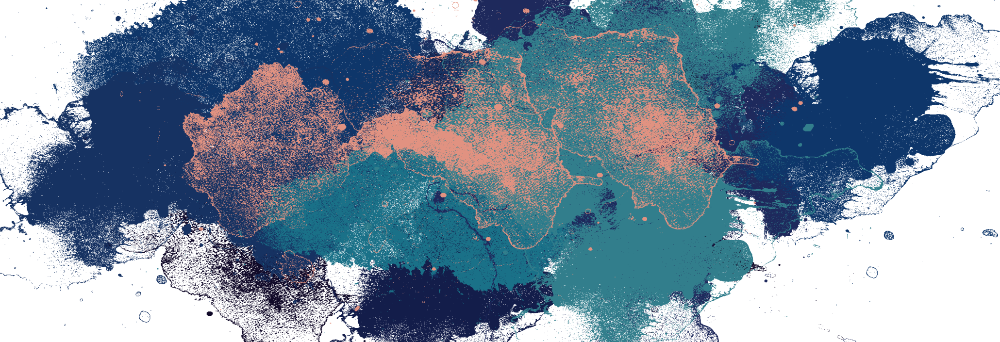
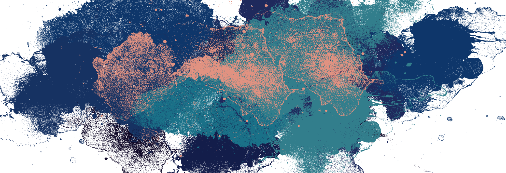

Rev. Daniel Lee
Pastor Daniel Lee was born in Korea and has been in Christian ministry since 1990 after graduating from Golden Gate Theological Seminary. Pastor Lee is the former Senior Pastor at Philadelphia Baptist Church and Living Word Church, and currently works with Dunamis Harvest Global Ministries. He is also serving as the Senior Pastor for All People’s Mission Church, and writes as a columnist for the Korean Christian News in Honolulu.
Tae Hee Kim
Tae Hee Kim was an engineer in Santa Clara County before joining the ministry full time. She was a former Sunday School Teacher at the Philadelphia Korean Baptist Church for six years and is currently working as an interpreter as part of the ministry for All People's Mission Church.